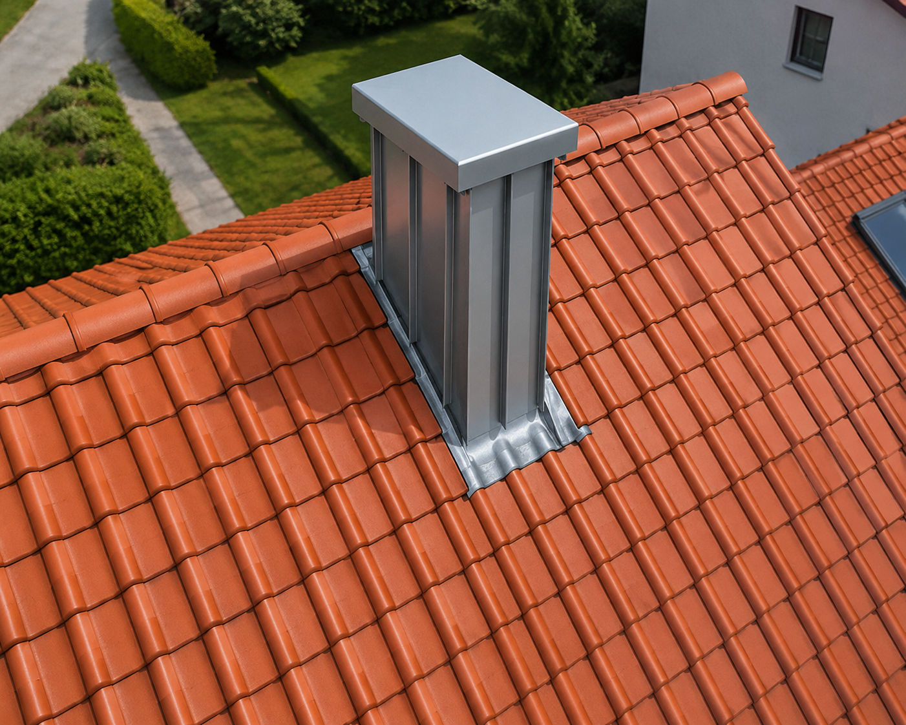
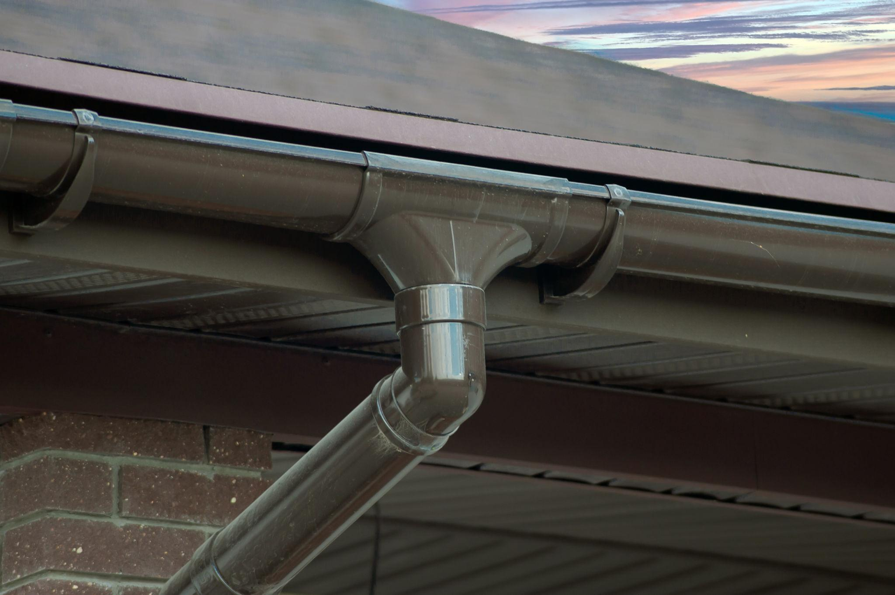
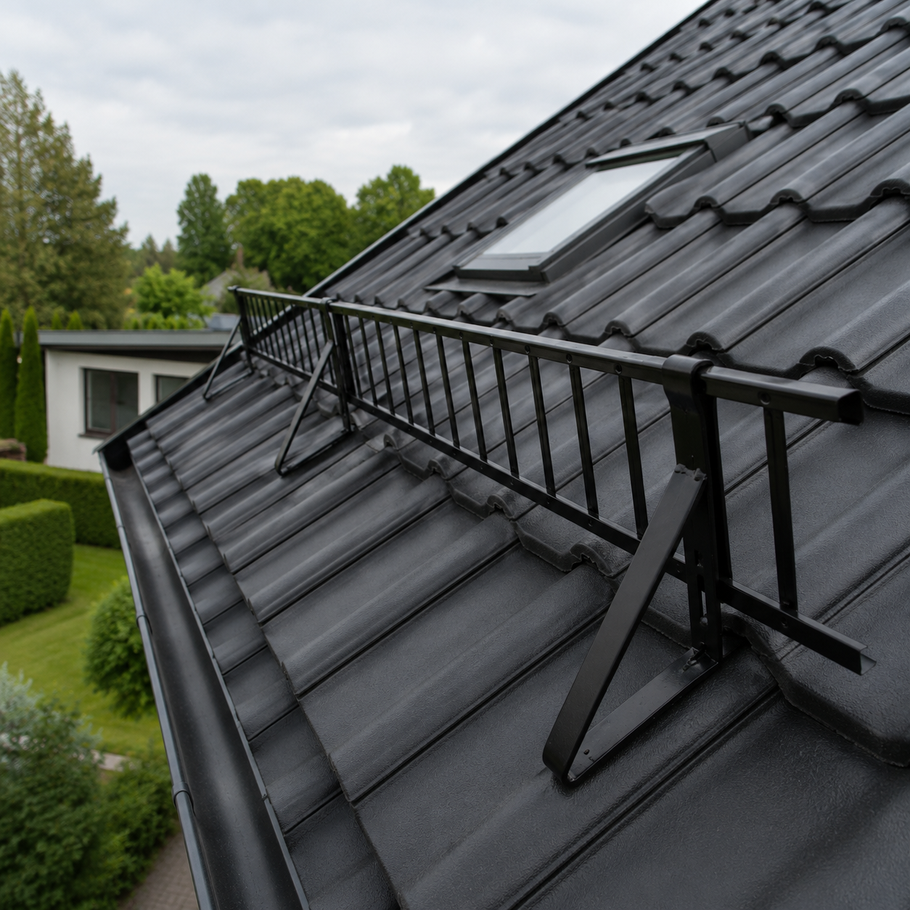

Unsere Klempnerleistungen
Dachrinnen & Fallrohre
Wir installieren und reparieren Dachrinnen und Fallrohre – Neuinstallation, Reparatur einzelner Abschnitte oder Komplettaustausch.
Wichtig: Unterdimensionierte Rinnen führen bei Starkregen zu Überlauf und Wasserschäden an Fassade und Fundament. Wir berechnen die richtige Rinnengröße nach Ihrer Dachfläche und dem regionalen Regenereignis.
Optional: Laubschutzgitter – verhindert Verstopfungen durch Laub und Nadeln dauerhaft.

Verblechungen & Anschlüsse
Schornsteinverblechung, Wandanschlüsse, Gaubenverblechung, Fensterbankbleche – jede Verblechung muss wasserdicht und dauerhaft haltbar sein.
Wir fertigen Anschlussbleche maßgenau – vor Ort oder in der Werkstatt – und bauen sie fachgerecht ein. Besondere Sorgfalt gilt dem Schornsteinanschluss: die häufigste Ursache für undichte Dächer.

Dachentwässerung & Notüberläufe
Besonders bei Flachdächern ist eine zuverlässige Entwässerung entscheidend. Notüberläufe sind eine Pflichtmaßnahme – sie verhindern, dass sich bei verstopften Abläufen und Starkregen Wasser auf dem Dach staut und in die Konstruktion eindringt.

Schneefangsysteme
Dachlawinen können Menschen und Gebäude gefährden. Schneefanggitter und -stangen sind in vielen Regionen und bei bestimmten Dachneigungen vorgeschrieben oder dringend empfehlenswert.
Wir montieren geprüfte Systeme nach DIN EN 1991 / ÖNORM – passend zu Ihrer Eindeckungsart und Dachneigung.
